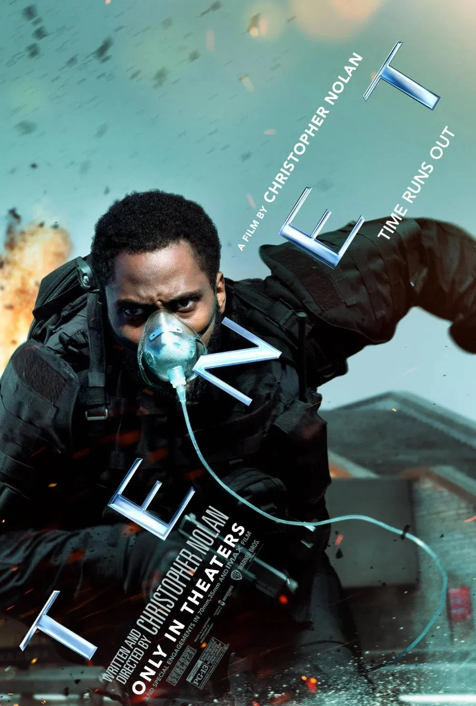

Tenet es una película de ciencia ficción dirigida por Christopher Nolan en 2020. En ella el tiempo no siempre avanza hacia delante.
Línea temporal:
Hacia delante ------>
Invertido <------
Lo que ha pasado, ha pasado. Pero eso no significa que no se pueda volver a mirar desde el otro lado.
Este div agrupa este párrafo con otros elementos sin darles ningún significado especial.

Películas de Christopher Nolan que quiero ver (empezando por la C):
Cuenta atrás para la escena final:
Personajes principales de Tenet:
La película Tenet es muy complicada, pero merece la pena verla dos veces. Aviso: puede dar dolor de cabeza.
Precio de la entrada: 12 € 8 € en el día del espectador.
Como dice Neil, lo que ha pasado, ha pasado
.
Un palíndromo es una palabra que se lee igual al derecho que al revés.
El Protagonista trabajaba para la CIA.
Se estrenó en España el .
Para mostrar el título en Python escribo print("Tenet"), donde la variable x guarda el tiempo y el programa responde Tiempo invertido.
Para pausar la película pulsa Espacio y para salir Ctrl + Q.
La fórmula del agua es H2O y el área de un cuadrado es lado2.
El barco se llamaba Sator, la palabra clave era Tenet y la regla más importante estaba subrayada en el informe.
Lo que más me gustó fue la escena del avión y la banda sonora.
Primera línea del párrafo
segunda línea del mismo párrafo, gracias al salto de línea.
Palabra muy larga: anti
Teoría de esta práctica: Etiquetas de contenido y texto en eniun
Escríbeme: fan.tenet@example.com
Llámame: 600 000 000
Descarga la ficha de la película: tenet.pdf